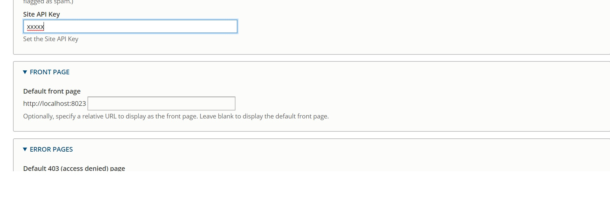

Steps to add field in admin form Drupal 8
Adding field to site admin form, Jan 03, 2020

Creating an admin form is often used. An admin interface enables you to make a module's settings configurable by editor or administrator so new fields can be added or existing fields can be changed.